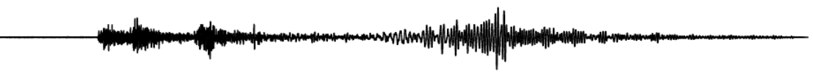
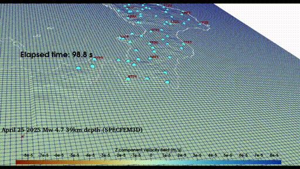
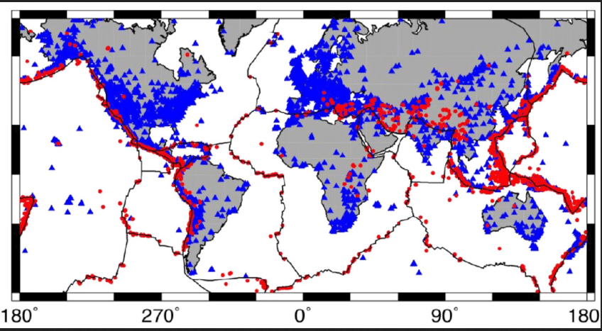
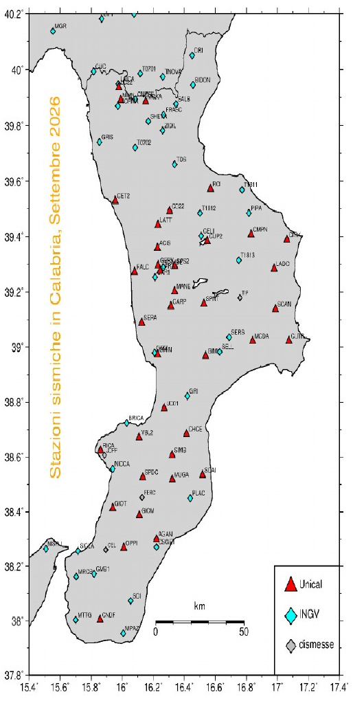

Hi, I'm Francesco this is my github.io page. Feel free to look around and if you are interested about what I've done you can contact me at my Contacts page, down below. Thank you.
Currently, I'm working as a post-lauream research analyst for Techfem research project
at University of Calabria. The main supervisor is prof. Mario La Rocca with the main
funding coming directly from the Techfem agency. Our main focus is the analysis of data
for monitoring the unstable slope along which a gas pipeline runs. Signals acquired from
seismometers, accelerometers, strain gauges, tiltmeters, and weather stations, are collected
with the aim of identifying any indication potentially linked to gravitational ground motion
in the pipeline area. Secondary focuses are on numerical modeling in general, high performance
computing, and earthquake related topics, even remotely related to seismology.
I strongly advice to share any kind of code to promote reproducibility in research both to advance
our understanding of the phenomena under study and also to see if there are any uncertainties not
meaningfully incorporated in our software/findings. Most, if not all, of my programs are published
and accessible by anyone of interest (or have suggestions to improve them). They can be found in
the research section of this page.


M.s.c numerical geophysics analist
Department of Physics, University of Calabria, Rende (CS)➹
Seismology laboratory, Unical, Rende (CS)➹
other stuff
Newton HPC super computing facility (Newton)➹
earthquake focal mechanism➹
earthquake beach ball interactive➹
earthquake focmec interactive➹
earthquake mag interactive➹
locating point & co➹
data visualiz gallery➹
shortest distance between two points across Earth's interior➹
Earth's interior and exterior across geological eras➹
Rothko's paintings based on weather outside at your location➹
ATLAS project of Earth's slabs location, depth, extent etc. ➹
